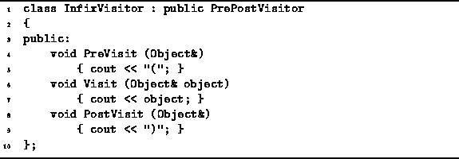

Data Structures and Algorithms
with Object-Oriented Design Patterns in C++
Data Structures and Algorithms
with Object-Oriented Design Patterns in C++
Program  gives the implementation of a routine,
PostfixToInfix,
which translates a postfix expression to an infix expression
using the method described above.
This routine reads an expression from the standard input file
one character at at time.
The expression is assumed to be a syntactically valid
postfix expression comprised of
single-digit numbers, single-letter variables,
and the binary operators +, -, *, and /.
gives the implementation of a routine,
PostfixToInfix,
which translates a postfix expression to an infix expression
using the method described above.
This routine reads an expression from the standard input file
one character at at time.
The expression is assumed to be a syntactically valid
postfix expression comprised of
single-digit numbers, single-letter variables,
and the binary operators +, -, *, and /.

Program: Binary Tree Application--Postfix to Infix Conversion
Since only binary operators are allowed, the resulting expression tree is a binary tree. Consequently, the class ExpressionTree is derived from the class BinaryTree.
The main program loop, lines 13-26, reads characters from the input one at a time. If a letter or a digit is found, a new tree with the character as its root is created and pushed onto the stack (line 16). If an operator is found, a new tree is created with the operator as its root (line 19). Next, two trees are popped from the stack and attached to the new tree which is then pushed onto the stack (lines 20-24).
When the PostfixToInfix routine encounters the end-of-file,
its main loop terminates.
The resulting expression tree is popped from the stack,
printed, and then deleted.
To print the expression, the PostfixToInfix routine
uses the InfixVisitor which is defined in Program .

Program: Binary Tree Application--Printing Infix Expressions
The InfixVisitor is intended to be used in a depth-first traversal.
At each non-terminal node of the expression tree,
the depth-first traversal first calls PreVisit,
which prints a left parenthesis.
In between the traversals of the left and right subtrees,
the Visit function is called,
which prints the object contained within the node.
Finally, after traversing the right subtree,
PostVisit prints a right parenthesis.
Given the input ab/cd-e*+,
the program constructs the expression tree as shown in Figure ,
and then prints the infix expression
The running time of the PostfixToInfix routine depends upon the number of symbols in the input. The running time for one iteration the main loop is O(1). Therefore, the time required to construct the expression tree given n input symbols is O(n). The DepthFirstTraversal routine visits each node of the expression tree exactly once and a constant amount of work is required to print a node. As a result, printing the infix expression is also O(n) where n is the number of input symbols.
The output expression contains all of the input symbols
plus the parentheses added by the PutInfix routine.
It can be shown that a valid postfix expression that contains n symbols,
always has (n-1)/2 binary operators and (n+1)/2 operands
(Exercise ).
Hence, the expression tree contains (n-1)/2 non-terminal nodes
and since a pair of parentheses is added for each non-terminal node
in the expression tree,
the output string contains 2n-1=O(n) symbols altogether.
Therefore, the overall running time needed to translate
a postfix expression comprised of n symbols to an infix expression is O(n).
 Copyright © 1997 by Bruno R. Preiss, P.Eng. All rights reserved.
Copyright © 1997 by Bruno R. Preiss, P.Eng. All rights reserved.